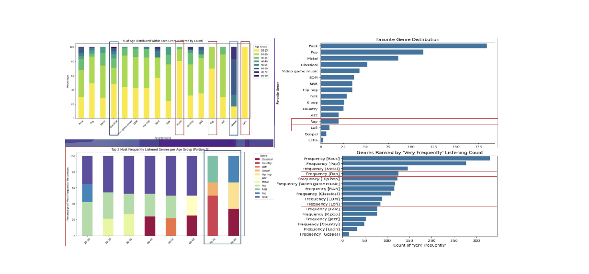
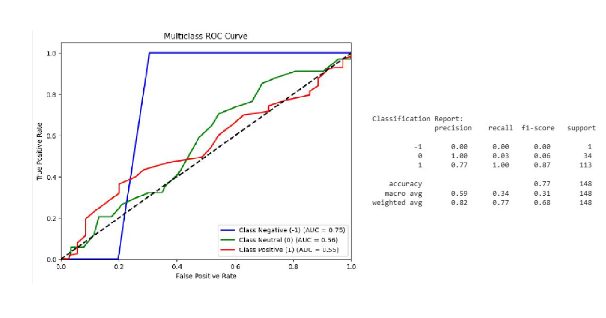
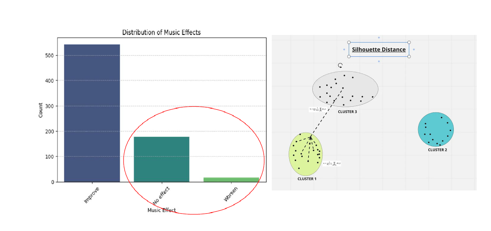
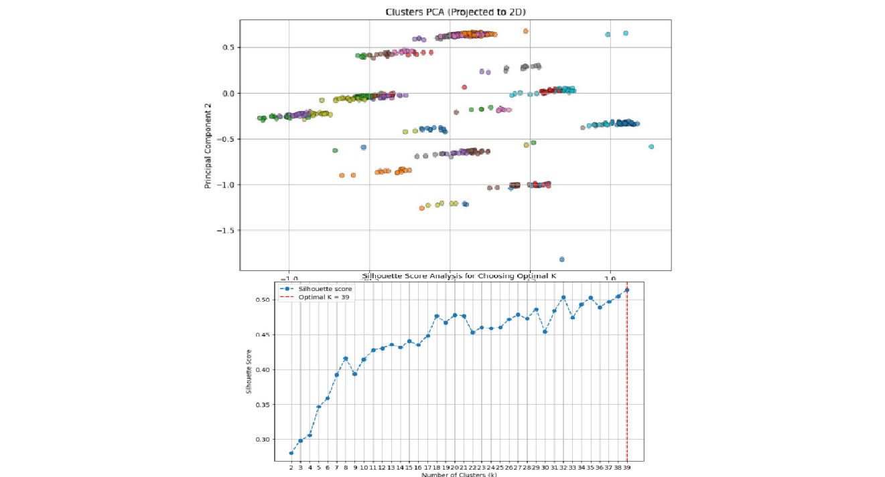
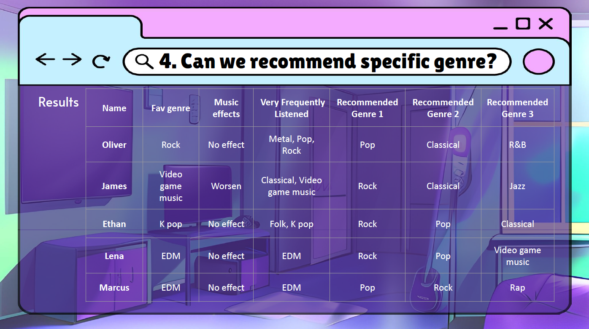

The Link Between Music & Mental Health
ML | Python | Data Analyst | Visualization

In this project, we explored the intersection of music and mental health through a data-driven lens, aiming to understand how listening habits correlate with emotional well-being. Our research was guided by four central questions: Do different age groups exhibit unique music preferences? Can we predict levels of anxiety, depression, insomnia, or OCD based on a person's listening patterns? Does music itself have a measurable impact on mental health? And finally, can we recommend specific music genres that may help improve individual well-being? By tackling these questions, we set out to uncover actionable insights that connect music consumption with mental health indicators across diverse populations.

Our analysis of genre preferences and listening frequency revealed clear generational patterns in music consumption. While genres like Rock and Pop were broadly favored across most age groups, younger listeners gravitated toward Rap, Lofi, Latin, and K-pop, whereas older listeners preferred Gospel and Classical. Interestingly, despite Rap and Lofi ranking low in stated genre preference, they appeared high on the “very frequently listened” list—suggesting these genres may serve functional purposes such as background music or mood regulation. Age also played a key role in genre alignment: Classical music consistently ranked in the top three for listeners aged 40 and above, highlighting a distinct divergence in taste compared to younger cohorts. These findings underscore the complex relationship between musical preference, usage context, and generational identity.

To assess whether music listening habits could predict mental health levels, we built a classification model using features like BPM, listening hours per day, and genre frequency. Our best-performing model achieved an accuracy of 77.03% and a weighted F1 score of 0.6768, with video game music emerging as a key indicator. However, the model struggled with imbalanced classes and failed to generalize well to underrepresented groups. While certain genres such as R&B and Hip Hop showed stronger correlations with mental health scores, our findings suggest that context—like depression status and age—played a larger role than genre alone. Ultimately, the relationship between music and mental health appears to be highly subjective, influenced by external lifestyle factors not captured in the dataset. We recommend collecting more comprehensive data (e.g., stress levels, sleep quality), using verified sources, and experimenting with techniques like SMOTE to improve prediction for underrepresented mental health categories.

To personalize music recommendations for mental health improvement, we applied K-Means clustering to group users who reported that music had “no effect” or even worsened their mental well-being. The goal was to identify clusters based on listening behavior and suggest genres that might better support emotional health. Using users’ listening patterns, we recommended the top three most-frequented genres within each cluster. We evaluated clustering quality using the Silhouette Score, which confirmed a clear separation between groups—indicating meaningful behavioral distinctions. This approach lays the groundwork for a behavior-based music recommendation system that could eventually support more adaptive and responsive mental wellness strategies.

To enhance the quality of our genre-based recommendations, we applied Principal Component Analysis (PCA) to reduce dimensionality and noise in the dataset. We identified five key components—age, foreign language usage, music listening while working, hours of listening per day, and whether the music was composed—that together explained nearly 80% of the data variance. Post-PCA, the clustering performance improved significantly, with the silhouette score rising from 0.2 to 0.5, indicating clearer group separation. We then visualized the PCA-transformed clusters and conducted K-Means clustering across various group counts, determining that 39 clusters yielded the highest silhouette score. This refinement enabled more targeted and interpretable recommendations based on distinct user profiles, providing a strong foundation for personalized mental health-focused music suggestions.

To translate our clustering results into actionable insights, we generated personalized genre recommendations for users who reported “no effect” or “worsened” mental health from their current listening habits. By analyzing the top genres within each individual’s cluster, we recommended three alternative genres aimed at improving their well-being. For example, James—whose favorite genre was video game music and reported negative effects—was recommended Rock, Classical, and Jazz. Similarly, users like Ethan and Lena, who experienced no impact from their current genres, received suggestions like Pop and Classical based on more uplifting listening patterns observed in similar clusters. This result showcases the potential of behavior-based music recommendations to enhance emotional outcomes through targeted, data-driven personalization.